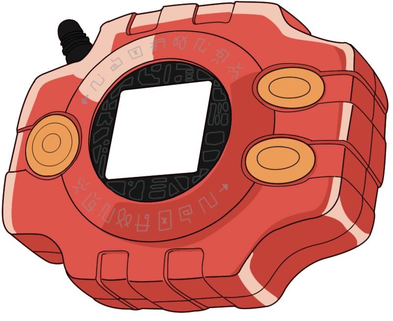
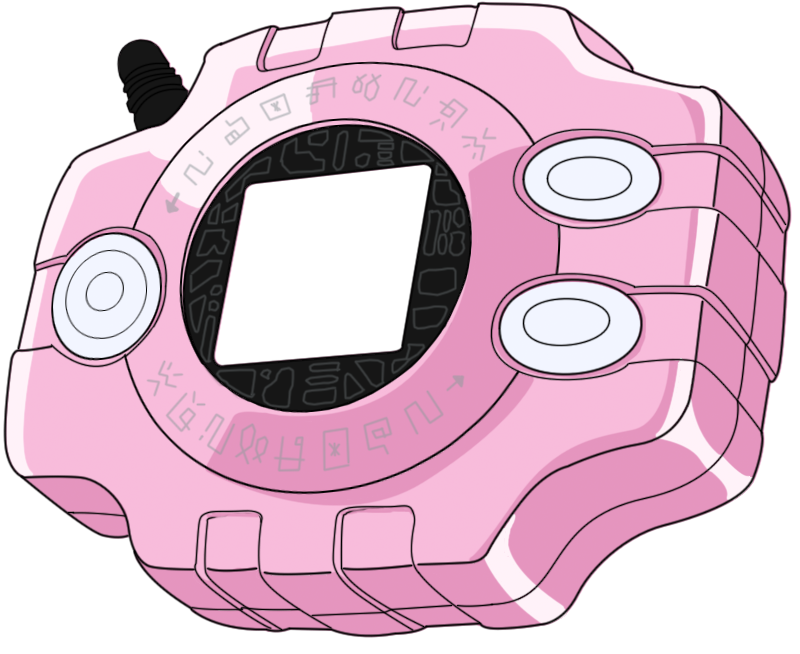
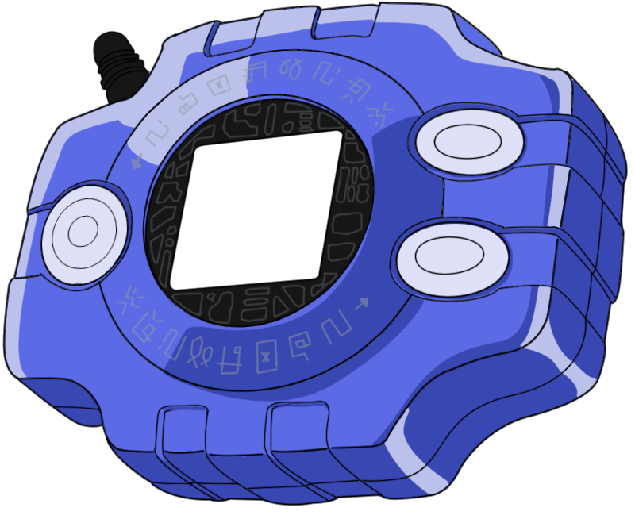
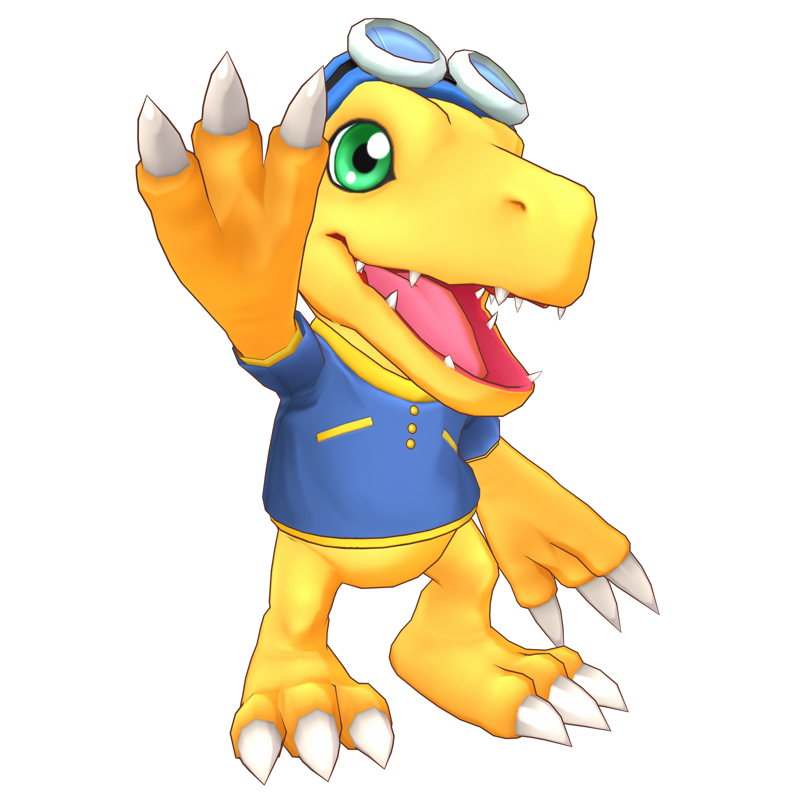

Quem somos?
Somos o pet shop digimon fundado pelo aluno Cláudio, possuimos como meta exibir uma interface simples, onde o leitor saiba onde ir e como procurar suas coisas.
Dica do dia
Hoje temos para adoção esse maravilhoso digimon, o Agumon. Agumon é um Digimon Réptil que desenvolveu bipedismo e tem a aparência de um pequeno dinossauro. Por ainda estar a caminho da fase adulta, o seu poder é reduzido, no entanto, a sua personalidade é muito feroz, pelo que não entende o medo. Cresceram-lhe afiadas e robustas garras em ambas as mãos e pés, cujo poder demonstra em batalha. Também prediz a evolução para um grande e poderoso Digimon. O seu movimento especial é cuspir fogo da boca para atacar seu oponente.

Promoções
Adote hoje o Agumon pelo nosso site e receba essa maravilhosa
digievolução, o WarGreymon!
O WarGreymon, guerreiro dragão mais forte, cujo corpo é revestido
por uma armadura de super-metal "Chrome Digizoid", é a forma
derradeira dos Digimons das Espécies Greymon. Embora a sua forma
humana difira das gigantescas figuras dos Digimons das Espécies
Greymon, melhorou grandemente a sua velocidade e poder, e é
provavelmente impossível derrotá-lo com ataques de níveis
Perfeito. Os "Dramon Killers" equipados nos dois braços demonstram
imenso poder contra Digimons das espécies Dramon, embora sejam
espadas de dois gumes que põem em risco a sua própria vida. Além
disso, quando as duas couraças que tem nas costas se unem,
tornam-se no "Brave Shield", um dos escudos mais resistentes.
Acessórios
Aqui temos os Digivices à venda, por apenas R$ 99,99. Temos somente as cores abaixo:
  Seu uso principal é capacitar o Digimon parceiro do DigiDestinado por meio da Digievolução, embora cada versão do Digivice também seja equipada com muitos outros recursos úteis, como radar ou armazenamento de dados. Mesmo quando os Digivices são do mesmo tipo, eles geralmente são diferenciados por um esquema de cores exclusivo para o personagem que os usa.
Roupas para seus pets
Como estamos chegando perto do inverno, agasalhe seu Digimon para que ele não sinta frio! Além de estar quente e confortável, seu digimon vai ficar no estilo do inverno!
Serviços
Em nosso pet shop também disponibilizamos um gracioso tratamento para seus digimons, além de cura, estética, também oferemos spa para os donos dos digimons aproveitarem o máximo de nossos serviços.